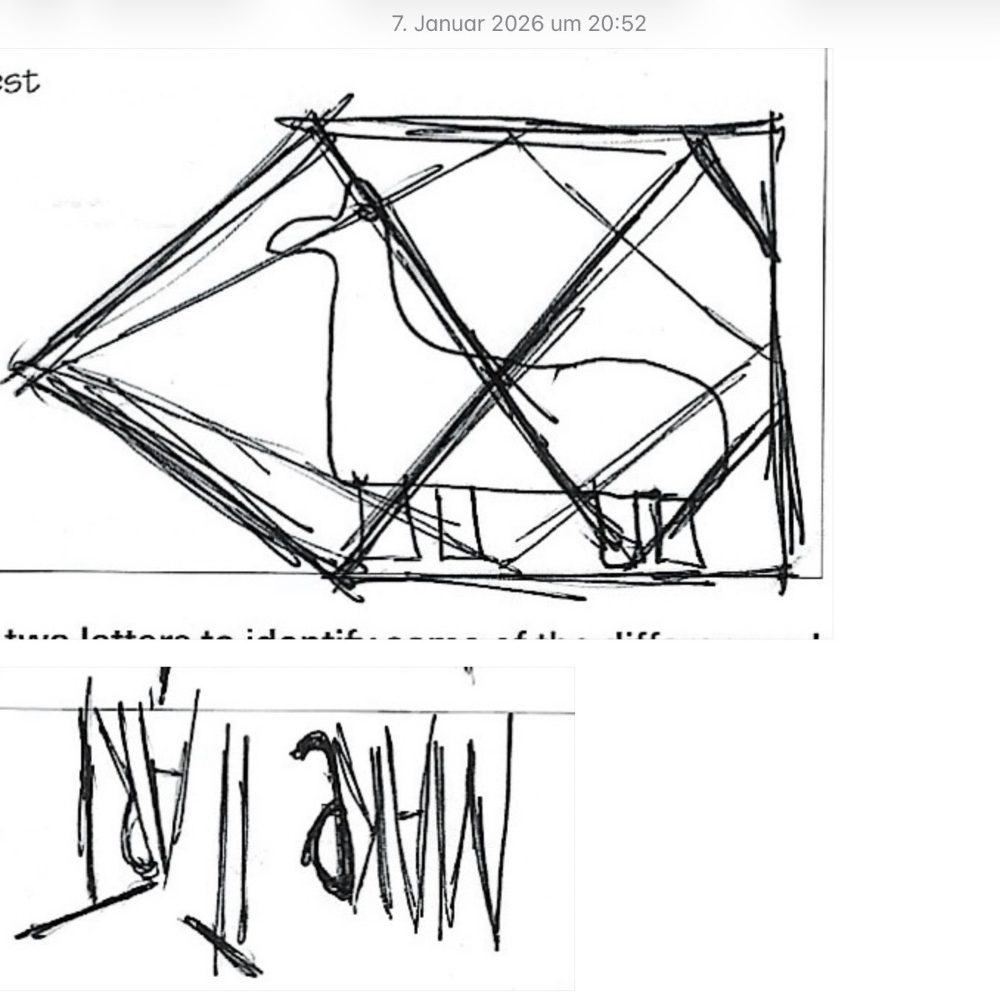
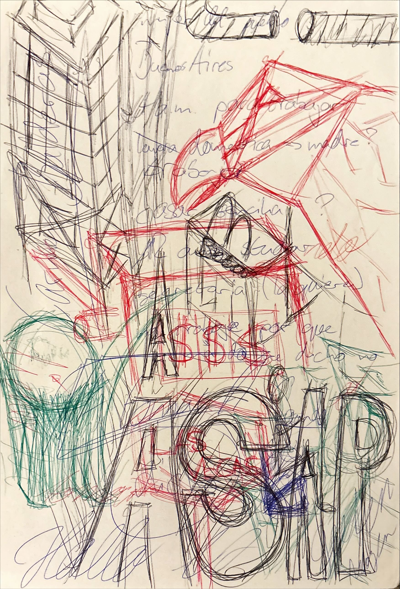
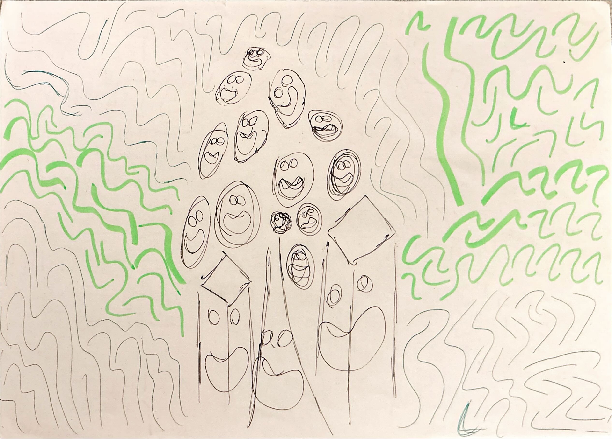
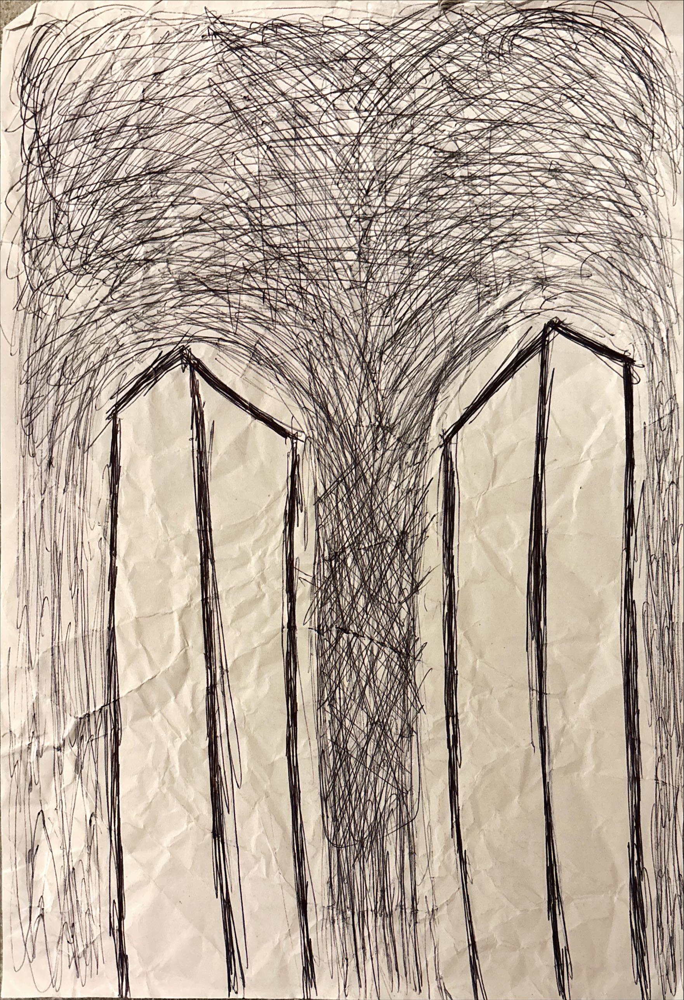

MAKEITART

art00 welcome

art01 healthy mind

art02 healthiest mind

art03 2070
cosy_ambient
FÜR EIN ANGENEHMES AMBIENTE SORGT DAS LIED "JUBILATION" VON SPOOKY TOOTH. MEHR INFOS HABE ICH NICHT GEFUNDEN, ABER ES TÖNT GUT.